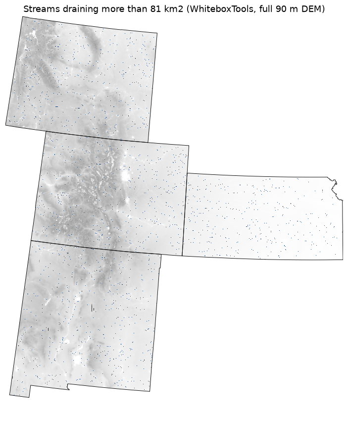
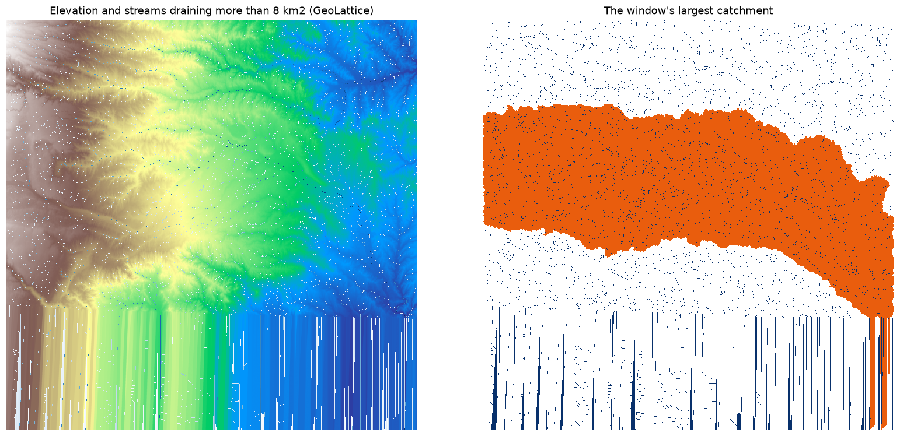

Drainage analysis turns an elevation model into rivers and catchments: which way water flows from each cell, how much area drains through it, and where the streams are. It is a standard first step for flood mapping, erosion and water quality models. It is also the clearest example in this chapter of an analysis that does not split into chunks: the water arriving at a river mouth comes from cells hundreds of kilometres upstream. This notebook computes D8 flow direction for the 262 million pixel Great Plains DEM chunk by chunk on CPU and GPU, measures how far the in-memory depression filling and flow accumulation of geolattice.distributed.hydrology scale, runs the full DEM through WhiteboxTools, and maps the streams and the largest catchment of a Kansas basin.
Overview
The D8 model
Each cell drains to the steepest downhill of its 8 neighbours (flow direction). Following those pointers from cell to cell traces flow paths; counting how many cells’ paths pass through a cell gives its flow accumulation (contributing area). Cells whose accumulation exceeds a threshold form the stream network, and the cells that drain to a chosen outlet form its catchment.
Local and global steps
Step
Information needed
Chunking
Flow direction
the 8 neighbours
local: chunks plus a 1 pixel halo, exact
Depression filling
the lowest outlet of every depression, possibly far away
global: a depression can span many chunks
Flow accumulation
every cell upstream
global: one cell’s answer depends on cells across the DEM
Streams, catchments
accumulation and flow paths
global
Real DEMs contain depressions (pits) with no downhill neighbour: real closed basins, errors, and places where a road embankment hides a culvert. Water would stop there, so depressions are filled (raised to their spill level; priority-flood, Barnes et al. 2014) or breached (a channel is cut through the barrier) before accumulation.
Strategies for DEMs that are too large
In memory, when it fits: simplest and exact.
Tile by watershed: cut the DEM along drainage divides (from a coarse DEM or a basin dataset such as HydroBASINS), so no flow crosses a tile edge, and process each basin alone.
Coarsen: run on a 270 m or 1 km DEM when the analysis allows.
Specialised out-of-core tools: WhiteboxTools (multithreaded Rust), TauDEM (MPI), RichDEM, or parallel priority-flood algorithms that exchange information between tiles (Barnes 2016).
Hydrology with GeoLattice
Function
Runs
Chunked
pdist.hydrology.flow_direction(dem)
CPU or GPU
yes: 1 pixel halo, NaN outside the DEM; codes 0 to 7 (N, NE, E, SE, S, SW, W, NW), -1 where no neighbour is lower
Flow direction needs only each cell’s 8 neighbours, so it runs chunk by chunk with a 1 pixel halo. Outside the DEM (and in no-data holes) the halo holds NaN, so no cell drains off the edge by accident.
Code
dem = dd.gp_raster("elev").compute() # 262 million pixels in memoryt = {} # timingsfor c in (["cpu", "gpu"] if caps["gpus"] else ["cpu"]): # both targets pdist.hydrology.flow_direction(dem, compute=c); sync() # warm-up t0 = time.perf_counter(); fd = pdist.hydrology.flow_direction(dem, compute=c); sync(); t[f"chunked, {c}"] = time.perf_counter() - t0 # timet0 = time.perf_counter(); fd_ref = tr.flow_direction(dem); t["whole array, NumPy, one core"] = time.perf_counter() - t0 # referenceprint(pd.Series(t, name="seconds").round(2).to_string()) # timingsprint("chunked equals whole-array result:", bool((fd.values == np.asarray(fd_ref)).all())) # exact matchcodes = pd.Series(fd.values.ravel()).value_counts().sort_index() # cells per directionnames = {-1: "none (pit, flat or no data)", 0: "N", 1: "NE", 2: "E", 3: "SE", 4: "S", 5: "SW", 6: "W", 7: "NW"} # code namesvalid =int(np.isfinite(dem.values).sum()) # cells with datapits =int(((fd.values ==-1) & np.isfinite(dem.values)).sum()) # cells with data and no lower neighbourprint(f"cells with data: {valid:,}; with no lower neighbour: {pits:,} ({pits / valid:.1%})") # depressions and flatscodes.rename(index=names).to_frame("cells") # table
chunked, cpu 8.72
chunked, gpu 1.01
whole array, NumPy, one core 22.73
chunked equals whole-array result: True
cells with data: 123,456,899; with no lower neighbour: 12,344,339 (10.0%)
cells
none (pit, flat or no data)
151040460
N
18297819
NE
10969291
E
19814376
SE
10926159
S
17640767
SW
9481948
W
15402723
NW
8579477
The chunked result equals the whole-array result cell for cell, on both targets, and the GPU was about eight times faster than the CPU chunks. One cell in ten with data has no lower neighbour: pits, flats and cells next to no-data holes, which is why the next step fills them. The four cardinal directions are more common than the diagonals, because a diagonal neighbour is 1.4 times farther away and so needs a larger drop to be the steepest; east is the most common, the regional slope of the Great Plains from the Rockies towards the Missouri and Mississippi.
How far does in-memory filling and accumulation scale?
Filling and accumulation are global. GeoLattice computes them in memory: priority-flood filling (a heap-based loop, one cell at a time in Python) and accumulation as a topological sweep down the flow paths. (An earlier version solved accumulation as one sparse linear system with SciPy’s general LU solver; while this notebook was written it ran out of memory on the 4096 x 4096 basin below, so it was replaced by the sweep, which gives identical results with memory that grows linearly.) The cells below time both on square windows of growing size in central Kansas and record the peak memory, then fit power laws and extrapolate to the full DEM.
Code
r0, c0 =8000, 9000# top-left corner of the windows, central Kansasrows = [] # one row per window sizefor n in [256, 512, 1024, 2048]: # window sides (4096 follows in the basin section) w = dem[r0:r0 + n, c0:c0 + n].rio.interpolate_na() # fill the scattered no-data holes from their neighbourswith dd.PeakMemory(0.02) as pm: # watch memory t0 = time.perf_counter(); filled = pdist.hydrology.fill_depressions(w); t_fill = time.perf_counter() - t0 # priority flood t0 = time.perf_counter(); acc = pdist.hydrology.flow_accumulation(filled, filled=True); t_acc = time.perf_counter() - t0 # sparse solve rows.append({"cells": n * n, "fill (s)": t_fill, "accumulate (s)": t_acc, "extra memory (GB)": pm.peak_gb - pm.start_gb}) # rowscal = pd.DataFrame(rows).set_index("cells") # tablescal.round(3) # show
fill (s)
accumulate (s)
extra memory (GB)
cells
65536
0.241
0.017
0.000
262144
1.065
0.060
0.001
1048576
4.502
0.258
0.009
4194304
19.032
1.462
0.182
Code
power =lambda n, a, b: a * n ** b # time or memory = a n^bN = dem.size # 262 million cellsfits = {} # fitted exponents and extrapolationsfor col in ["fill (s)", "accumulate (s)"]: # the two run times (a, b), _ = curve_fit(power, scal.index.values.astype(float), scal[col].values, p0=[1e-6, 1.0], maxfev=20000) # fit fits[col] = {"exponent": b, "full DEM (extrapolated)": power(N, a, b)} # extrapolatefits = pd.DataFrame(fits).T # tableper_cell = scal["extra memory (GB)"].iloc[-1] *1e9/ scal.index[-1] # bytes per cell at the largest windowprint(f"full DEM: {N /1e6:.0f} million cells, {dd.gb(dem.nbytes)} as float32; memory grows linearly, "# sizef"about {per_cell:.0f} bytes per cell, so roughly {per_cell * N /1e9:.0f} GB for the full DEM") # memory estimatefits.round(2) # show
full DEM: 262 million cells, 1.05 GB as float32; memory grows linearly, about 43 bytes per cell, so roughly 11 GB for the full DEM
exponent
full DEM (extrapolated)
fill (s)
1.04
1404.38
accumulate (s)
1.24
243.46
Both run times grow close to linearly with the number of cells, and so does memory, at a few tens of bytes per cell. Extrapolated to all 262 million cells, accumulation would take a few minutes and the memory would fit this machine easily; filling is the slow part, at more than twenty minutes, because the priority-flood loop visits one cell at a time in Python. The full Great Plains DEM is therefore within reach of the in-memory route on this machine, but slowly, and a DEM ten times larger would not fit. For the whole region, a compiled tool is the better choice.
The full DEM with WhiteboxTools
WhiteboxTools is a compiled, multithreaded program; geolattice.whitebox runs it on files. The full DEM is written to a GeoTIFF, filled (Wang and Liu’s fast priority-flood variant), and accumulated with D8 (output in cells).
fill depressions 50.1
D8 flow accumulation 10.5
largest accumulation: 12,717,194 cells = 103,009 km2
Code
streams = (acc_full >=10_000) # cells draining at least 81 km2q = streams[::4, ::4].compute() # every 4th cell for plottingfig, ax = plt.subplots(figsize=(8, 8)) # one mapax.imshow(dd.quicklook(dd.gp_raster("elev"), 4), cmap="Greys", extent=dd.extent(q), alpha=0.5) # elevation backdropax.imshow(np.where(q, 1.0, np.nan), cmap="Blues_r", extent=dd.extent(q), interpolation="nearest") # streamsdd.gp_states().boundary.plot(ax=ax, color="k", lw=0.6) # statesax.set_title("Streams draining more than 81 km2 (WhiteboxTools, full 90 m DEM)"); ax.set_axis_off(); plt.tight_layout(); plt.show() # draw

WhiteboxTools processed all 262 million cells in about a minute: the out-of-core and multithreaded route for DEMs too large for the in-memory functions. The stream network shows the Platte, Arkansas, Smoky Hill, Republican and Kansas rivers and the Rio Grande. Breaks in some rivers come from the DEM’s no-data holes, where the filling treats every hole as an outlet.
Streams and catchments of a Kansas basin
GeoLattice’s in-memory functions handle a 4096 x 4096 window (369 x 369 km) of central Kansas in about a minute and a half, and the results can be compared with WhiteboxTools on the same window. Every cell then gets the outlet its flow path ends at (by pointer jumping along the D8 receivers), and the cells sharing the outlet with the largest accumulation form the window’s largest catchment.
Code
w = dem[r0:r0 +4096, c0:c0 +4096].rio.interpolate_na() # the window, holes filledt0 = time.perf_counter() # startzf = pdist.hydrology.fill_depressions(w) # fillfdw = pdist.hydrology.flow_direction(zf, compute="cpu") # flow direction of the filled DEMacc = pdist.hydrology.flow_accumulation(zf, filled=True) # accumulationprint(f"GeoLattice, 17 million cells in memory: {time.perf_counter() - t0:.0f} s") # timew.rio.to_raster(HY /"win.tif") # the same window for WhiteboxToolswbt.fill_depressions_wang_and_liu(str(HY /"win.tif"), str(HY /"win_f.tif")) # fillwbt.d8_flow_accumulation(str(HY /"win_f.tif"), str(HY /"win_acc.tif"), out_type="cells") # accumulateacc_wb = pdist.read_raster(HY /"win_acc.tif").compute() # Whitebox results_gl, s_wb = np.asarray(acc) >=1000, acc_wb.values >=1000# streams draining 8.1 km2agree = (s_gl & s_wb).sum() / (s_gl | s_wb).sum() # overlap of the two stream networksprint(f"stream cells: GeoLattice {s_gl.sum():,}, WhiteboxTools {s_wb.sum():,}; overlap (intersection / union) {agree:.1%}") # comparison
GeoLattice, 17 million cells in memory: 90 s
stream cells: GeoLattice 680,482, WhiteboxTools 680,894; overlap (intersection / union) 98.9%
Code
rec = _receivers(np.asarray(fdw.values)) # receiver of every cell (-1 at outlets)idx = np.arange(rec.size) # cell numberstgt = np.where(rec <0, idx, rec) # one step downstream (outlets point to themselves)for _ inrange(64): # pointer jumping: each round doubles the distance followed nxt = tgt[tgt] # two stepsif np.array_equal(nxt, tgt): # every cell has reached its outletbreak tgt = nxt # continueacc_v = np.asarray(acc).ravel() # accumulation as a vectormain = tgt[np.argmax(acc_v)] # outlet of the cell with the largest accumulationcatch = (tgt == main).reshape(acc.shape) # its catchmentprint(f"largest catchment in the window: {catch.sum():,} cells = {catch.sum() *0.0081:,.0f} km2") # areafig, ax = plt.subplots(1, 2, figsize=(15, 7)) # two mapsext = dd.extent(w) # extentax[0].imshow(w, cmap="terrain", extent=ext) # elevationax[0].imshow(np.where(np.asarray(acc) >=1000, np.log10(np.asarray(acc)), np.nan), cmap="Blues", extent=ext, interpolation="nearest") # streamsax[0].set_title("Elevation and streams draining more than 8 km2 (GeoLattice)") # titleax[1].imshow(np.where(catch, 1, np.nan), cmap="Oranges", vmin=0, vmax=1.5, extent=ext, interpolation="nearest") # catchmentax[1].imshow(np.where(s_gl, 1, np.nan), cmap="Blues_r", extent=ext, interpolation="nearest") # streams on topax[1].set_title("The window's largest catchment"); [a.set_axis_off() for a in ax] # labelsplt.tight_layout(); plt.show() # draw
largest catchment in the window: 5,471,197 cells = 44,317 km2

Code
shutil.rmtree(HY) # remove the scratch files
GeoLattice and WhiteboxTools give nearly the same stream network on the window. The remaining differences come from flats: the two programs give filled flats slightly different gradients (GeoLattice an epsilon of 10^-4 m per step, Wang and Liu’s method none), so flow across large flat areas can take different routes. The largest catchment in the window ends where its river leaves the window. That is the practical lesson of the section: a catchment cut by a tile edge is incomplete, which is why large DEMs are tiled along drainage divides, not along rows and columns.
Summary and exercises
Flow direction is local and was computed for 262 million cells chunk by chunk, identical to the whole-array result, on CPU and GPU.
Depression filling and flow accumulation are global. GeoLattice’s in-memory versions grew close to linearly in time and memory; the full DEM would fit in memory but filling would take more than twenty minutes. Accumulation, rewritten as a topological sweep while this notebook was written, no longer runs out of memory.
WhiteboxTools filled and accumulated the full DEM in about a minute, out of process and multithreaded.
On a 4096 x 4096 basin window the stream networks of GeoLattice and WhiteboxTools overlapped by 99 %; the differences come from the gradient given to filled flats.
Catchments cut by tile edges are incomplete: tile large DEMs by watershed.
Exercises
Repeat the stream comparison with thresholds of 100, 1,000 and 10,000 cells. Where do the two programs differ most?
Coarsen the DEM to 270 m (dem.coarsen(x=3, y=3).mean()) and run the in-memory functions on all of Kansas. Compare the stream network with the 90 m WhiteboxTools result.
Use geolattice.rsense.lidar.terrain.hand on the basin window to compute the height above nearest drainage, and map the cells less than 2 m above a stream.
Use WhiteboxTools’ breach_depressions_least_cost instead of filling and compare the stream networks. Which handles road embankments better?